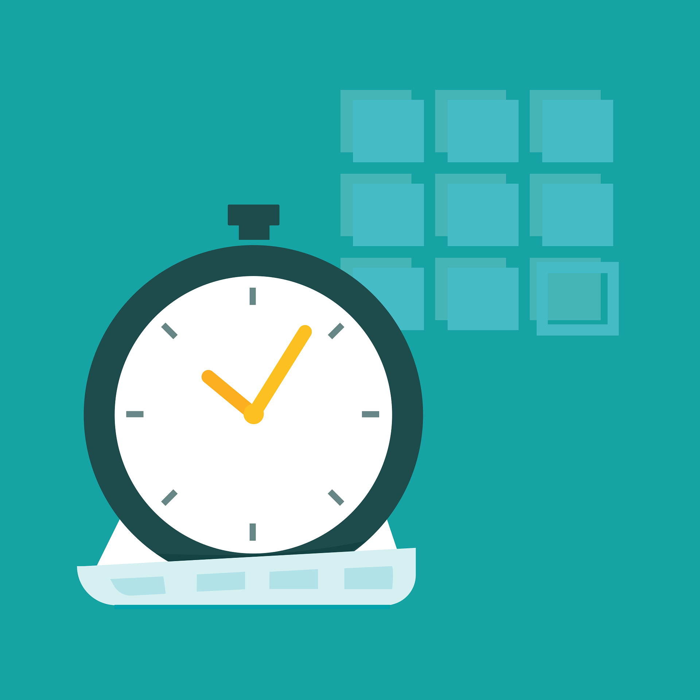

<link rel="stylesheet" href="style.css">

<link rel="stylesheet" href="style.css">

<header class="main-header">
  <div class="logo">
    <a href="index.html" class="logo-link">
      
      <span>ClarityBased</span>
    </a>
  </div>
  <nav class="nav-menu">
    <a href="SelfGrow.html">Self-Growth</a>
    <a href="CareerFinance.html">Career & Finance</a>
    <a href="Relationships.html">Relationships</a>
    <a href="MindTraining.html">Mind Training</a>
    <a href="WellnessPsychology.html">Wellness & Psychology</a>
  </nav>
</header>


<!-- პირველი ბლოკი -->
<section class="hero-card">
  <div class="hero-left">
    
  </div>
  <div class="hero-right">
    <h2>How to become a content creator from scratch</h2>
    <ul>
      <li>1. Start before you’re ready<br> Don’t wait until you feel “confident” or have the perfect setup.
Clarity comes after action — not before. Just post something real.</li>
      <li>2. Pick one platform and one topic<br> You don’t need to be everywhere.
Start with one space (YouTube? Instagram? TikTok?) and one thing you care about. Simplicity builds momentum.</li>
      <li>3. Be useful, not perfect<br> People don’t follow you because you're flawless — they follow you because you help, entertain, or speak truth.
Your value > your filter.</li>
      <li>4. Schedule it like it’s a job (because it is)<br> Even if no one’s paying you yet — show up like they are.
Consistency builds trust — and trust builds everything else.</li>
      <li>5. Don’t chase viral — chase real people<br> Forget the algorithm for a minute. Think about one person you’re helping.
10 real people who care is more powerful than 10,000 who scroll past.</li>
    </ul>

    <div class="hero-footer">
      <div class="hero-note">
        <p>You don’t need fancy gear, a huge following, or permission.
You just need to start. And stay.</p>
      </div>
      <div class="hero-button">
        <a class="cta-button" href="https://claritybased.gumroad.com/l/eufwzo">Get the Creator Starter Kit <span>$4.99</span></a>
      </div>
    </div>
</section>

<div class="challenge-container">
  <div class="hero-left">
    
  </div>
  <div class="hero-right">
    <h2>How to Create a Digital Product — From Idea to Income</h2>
    <ol>
      <li><strong>Start with what you already know</strong><br>You don’t need to be an expert — just one step ahead of someone else.
What have people asked you for help with? That’s a product waiting to be made.</li>
      <li><strong>Pick one format, keep it simple</strong><br>PDF? Template? Mini-course? Don’t overcomplicate it.
Simple sells. Value comes from clarity, not from 50 pages.</li>
      <li><strong>Build before you brand</strong><br>Don’t get stuck designing the perfect cover.
Focus on the content first — you can polish it later. People buy solutions, not logos.</li>
      <li><strong>Use what you have</strong><br>No fancy tools needed.
Google Docs, Canva, Notion — that’s enough to create something useful and sellable.</li>
      <li><strong>Launch ugly, improve later</strong><br>You don’t need a full store or a big audience.
Start by selling to 3 people. Then learn, tweak, grow. Real income starts with real action.</li>
    </ol>
    <div class="cta">
      <p>Your knowledge is worth more than you think.
You just need to package it — and press publish.</p>
      <a class="cta-button" href="https://claritybased.gumroad.com/l/nupsi">Get the Digital Product Starter Guide <span>$5.99</span></a>
    </div>
  </div>
</div>


<div class="challenge-container">
  <div class="hero-left">
    
  </div>
  <div class="hero-right">
    <h2>How to Become a Freelancer – Build Freedom on Your Terms</h2>
    <ol>
      <li><strong>Start with one skill you already have</strong><br>Writing? Design? Translation? Helping someone stay organized?
You don’t need to invent anything new </li>
      <li><strong>Offer your help before you offer a price</strong><br>Find a space where you can say, “I can help you with this.”
A real relationship gets things done faster than a ready-made portfolio.</li>
      <li><strong>Use simple platforms to find your first gig</strong><br>Notion. Fiverr. Facebook groups. Discord community.
Don't expect to be throwing thousands of dollars at Upwork — the first steps are small and personal.</li>
      <li><strong>Set your own hours (but actually show up)</strong><br>Freedom ≠ laziness.
When you write your own schedule, you also require more discipline. Be where you think no one is looking — and you will increase your confidence.</li>
      <li><strong>Be a learner, not just a doer</strong><br>There will be something new in every phase — accounting, writing a price, accepting rejections.
Accept that you don't know everything — and that's the greatest professionalism.</li>
    </ol>
    <div class="cta">
      <p>You don’t need a boss to start working.
You need clarity, structure, and 1 real person to say “yes.”</p>
      <a class="cta-button" href="https://claritybased.gumroad.com/l/hwpma">Get the Freelance Freedom Kit <span>$4.99</span></a>
    </div>
  </div>
</div>


<div class="challenge-container">
  <div class="hero-left">
    
  </div>
  <div class="hero-right">
    <h2>Learn the Basics of Trading — Understand the Market Before You Risk a Dime</h2>
    <ol>
      <li><strong>Don’t trade what you don’t understand</strong><br>
        If you can’t explain it in your own words, don’t put your money in it.
Confidence isn’t guessing — it’s clarity. Learn before you leap.</li>
      <li><strong>Start with market mindset, not money</strong><br>
        Good traders aren’t chasing quick wins. They’re studying behavior, patterns, and probabilities.
Before you invest a cent, invest in your perspective.</li>
      <li><strong>Pick one type of trading and learn it well</strong><br>
        Stocks? Crypto? Forex? Don’t try to learn everything at once.
Master one lane before switching gears — depth beats noise.</li>
      <li><strong>Use fake money before real money</strong><br>
        Demo accounts exist for a reason.
Practice without pressure helps you build skills, not just luck.</li>
      <li><strong>Know your plan before you press buy</strong><br>
        Most beginners lose money not because of the market — but because they had no plan.
No trade is worth it if you don’t know your entry, exit, and reason.</li>
    </ol>
    <div class="cta">
      <p>Trading isn’t just about making money — it’s about managing your mind.
The best trades are the ones you don’t regret.</p>
      <a class="cta-button" href="https://claritybased.gumroad.com/l/rdunaq">Get the Trading Starter Guide <span>$6.99</span></a>
    </div>
  </div>
</div>


<div class="challenge-container">
  <div class="hero-left">
    
  </div>
  <div class="hero-right">
    <h2>Budget Planning and Saving Money — Take Control of Your Finances</h2>
    <ol>
      <li><strong>Know where your money actually goes</strong><br>
        You don’t need a spreadsheet — just start writing it down.
Awareness is the first step. You can’t change what you don’t see.</li>
      <li><strong>Create a “real life” budget — not a perfect one</strong><br>
        You don’t have to cut out coffee or stop living.
Just build a plan that works with your life, not against it.</li>
      <li><strong>Pay yourself first, even if it’s $5</strong><br>
        Saving isn’t about how much you make — it’s about making saving a habit.
Small, consistent actions build real momentum.</li>
      <li><strong>Separate your spending into “needs, wants, and leaks”</strong><br>
        Some things are necessary. Some bring joy.
But some are just money slipping away without purpose — and those are the ones to notice.</li>
      <li><strong>Forgive your past money mistakes</strong><br>
        You’re not behind. You’re not bad with money.
You’re just learning — and that means you’re already moving forward.</li>
    </ol>
    <div class="cta">
      <p>Money doesn’t have to be a mystery.
You deserve clarity, calm, and control — not chaos.</p>
      <a class="cta-button" href="https://claritybased.gumroad.com/l/bogwur">Get the Budget & Savings Guide <span>$4.99</span></a>
    </div>
  </div>
</div>


<link rel="stylesheet" href="style.css">

<script src="script.js"></script>


<footer class="custom-footer">
  <div class="footer-left">
    <button class="contact-button" id="contactBtn">
      <i class="fas fa-envelope"></i> Contact Us
    </button>
  </div>

  <div class="footer-right">
    <div class="brand-info">
      
      <div>
        <h2>ClarityBased</h2>
        <p class="slogan">Find clarity. Live intentionally.</p>
      </div>
    </div>
    <p class="footer-copy">© 2025 ClarityBased. All rights reserved.</p>
  </div>
</footer>


<div id="contactModal" class="modal">
  <div class="modal-content">
    <span id="closeModal" class="close">&times;</span>
    <h2>Contact Us</h2>
    <form action="https://formspree.io/f/mldnyaoo" method="POST">
      <input type="text" name="name" placeholder="Your Name" required />
      <input type="email" name="email" placeholder="Your Email" required />
      <textarea name="message" placeholder="Your Message" required></textarea>
      <button type="submit">Send</button>
    </form>
  </div>
</div>